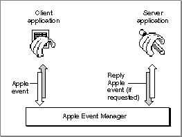

Sending and Responding to Apple Events
An Apple event is a high-level event that conforms to the Apple Event Interprocess Messaging Protocol. The Apple Event Manager uses the Event Manager to send Apple events between applications on the same computer or between applications on remote computers.Applications typically use Apple events to request services and information from other applications or to provide services and information in response to such requests. For example, any application can use the Get Data Apple event to request that your application locate and return a particular set of data, such as a table. If your application supports the Get Data event, it should be able to recognize the event and respond by locating the requested data and returning a copy of the data to the application that requested it.
Communication between two applications that support Apple events is initiated by a client application, which sends an Apple event to request a service or information. For example, a client application might request services such as printing specific files, checking the spelling of a list of words, or performing a numeric calculation; or it might request information, such as one customer's address or a list of names and addresses of all customers living in Ohio. The application providing the service or the requested information is called a server application. The client and server applications can reside on the same local computer or on remote computers connected to a network.
Figure 1-5 shows the relationships among a client application, the Apple Event Manager, and a server application. The client application uses Apple Event Manager routines to create and send the Apple event, and the server application uses Apple Event Manager routines to interpret the Apple event and respond appropriately. If the client application so requests, the server application adds information to a reply Apple event that the Apple Event Manager returns to the client application.
Figure 1-5 Sending and responding to Apple events with the aid of the Apple Event Manager

If an Apple event is one of the standard events defined in the Apple Event Registry: Standard Suites, the client application can construct the event and the server application can interpret it according to the standard definition for that event. To ensure that your application can respond to Apple events sent by other applications, you should support the standard Apple events that are appropriate for your application.
Subtopics
- Standard Apple Events
- Handling Apple Events